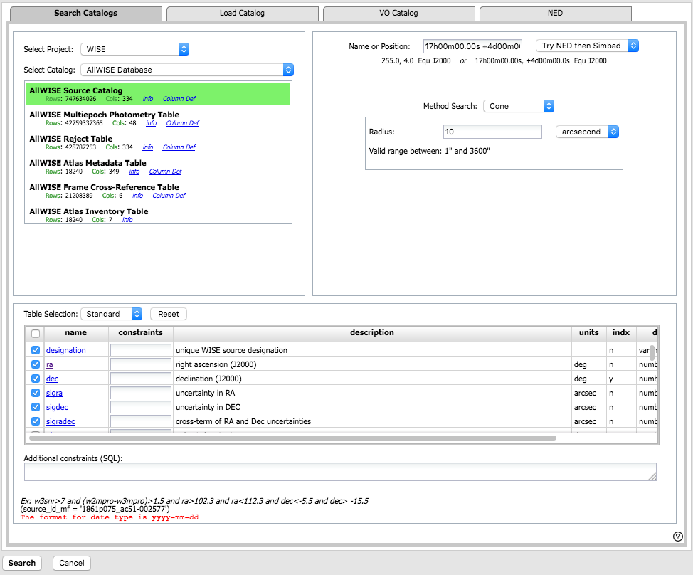

Contents of page/chapter:
+IRSA Catalogs -- Overlaying catalogs
from IRSA
+Catalogs from disk
+VO Catalogs
+NED Catalogs

In the upper left of the window, you specify the catalog you want to
search. In order to help it give you a specific list of choices, you
need to first tell it the project (default: WISE) and category
(default: AllWISE Database). After you have selected these items,
right below those choices, you then pick the specific catalog
(default: AllWISE Source Catalog). To change catalogs, first select
the "project" under which they are housed at IRSA, such as 2MASS,
IRAS, WISE, MSX, etc. The options under the "category" and the
specific clickable catalog change according to the project you have
selected. A short description is provided for
each of the catalogs, with links for more information (including
definitions of the sometimes cryptic column names); an example of this
link for more information is here:
In the upper right is the search target and search region. By default, it pre-fills your search target to match your most recently searched target. To change the target, simply enter the new coordinates in the search box, with all the same options as searching the SOFIA Science Data Archive in general. Next, choose your search shape ("Search Method") from the pulldown; the options below the search method change accordingly (and sometimes the target vanishes, when it is not relevant):
Power user tip: By default, it may show you fewer columns than are available in the full catalog. By selecting "long form", you can access the full range of available columns. In some cases, there are literally hundreds of columns that you can access!
Click on "Search" to initiate the search. It will load the catalog into a tab of its own on the bottom left of the screen (in the catalogs window pane) and make a plot (see below) on the bottom right. The catalog objects will also be overlaid on the images you have loaded. The image and the plot and the catalog panes are interlinked -- clicking on a row in the table shows it on the image and plot; clicking on a source in the plot shows it in the image and table; clicking a source on the image shows it in the plot and table.
To close the catalog search window without searching on a catalog, click on "cancel" in the lower left.
NOTE THAT the search may take a long time to return, especially if you have asked for a large catalog, and you may think that nothing has happened, but be patient.
It may give you the option to put the catalog search in the background monitor (from which you can load it into a tab), or return a tab directly. If you do ask it to put it in the background monitor, the monitor will dynamically update to reflect its status, and will let you know when the catalog is ready to download or display. You may ask it to email you when it is ready. A popup appears asking if you want to load the catalog. Either click on the popup or explicitly open the background monitor and click on the catalog name to load it into a tab of its own.
Use large search radii with caution! Be sure you have a sense of how many sources you are likely to retrieve. Searches that retrieve more rows will take longer. Searches that retrieve thousands or tens of thousands of rows will take quite a while.
By clicking on the blue "Catalogs" tab, you are by default dropped
into the interface for searching for catalogs at IRSA. However, you can
pick another tab from the top, "Load Catalog", to load your own
catalog, either from disk or from the IRSA Workspace  .
.
Your catalog needs to be in IPAC table format  , which is a varietal of plain
text. IRSA has a table reformatting and validation service
, which is a varietal of plain
text. IRSA has a table reformatting and validation service  which
may be helpful, or you can download just about any catalog you find
through IRSA, and copy that format.
which
may be helpful, or you can download just about any catalog you find
through IRSA, and copy that format.
Your table file MUST have RA and Dec values, and unless it is specified, it assumes J2000.
You can add a "SYMBOL" parameter to change the shape (X, SQUARE, CROSS, EMP_CROSS, DIAMOND, DOT) of catalog marks, e.g.:
\SYMBOL = X
You can add a "DEFAULT_COLOR" parameter to assign a CSS color name or a HEX value to catalog marks, e.g., either of these two:
\DEFAULT_COLOR = lightcyan \DEFAULT_COLOR = #00FF00You can find the CSS color code or the CSS color HEX values
Your catalog is then shown (and interacted with) in the same way as the other catalogs described here.
By clicking on the blue "Catalogs" tab, you are by default dropped into the interface for searching for catalogs at IRSA. However, you can pick another tab from the top, "VO Catalog", to search for and load catalogs from the VO.

As for the IRSA catalog search, the tool pre-fills the target position with the coordinates of the target with which you have been working. In this case, you are limited to a cone search, so the next option is the cone search radius. As usual, pick your units from the pulldown first, and then enter a number; if you enter a number and then select from the pulldown, it will convert your number from the old units to the new units. There are both upper and lower limits to your search radius; it will tell you if you request something too big or too small.
If you know your VO URL already, you can jump down to the Cone Search URL box and type or paste your URL into the box and hit search.
More commonly, however, users do not know a priori which URL to use. Click on "Find Astronomical Data Resources" to be droped into a VO search. Find the URL corresponding to the catalog you want, copy it, and go back and paste it in the URL box. The URL should not have the RA and Dec in it; the tool will add your RA and Dec as listed to the URL in the right syntax. Click on "Search" to initiate the search.
The search results are then shown (and interacted with) in the same way as the other catalogs described here.
Example
Load the tool. Search on IC1396. Go to the catalogs tab. Choose "VO
Catalog." It wants the root URL for a cone search. I click on "Find
Astronomical Data Resources", which takes me here  .
Search on IPHAS. Get this page
.
Search on IPHAS. Get this page  . Look for the complete catalog release
(not just one associated with one specific study). The name of the
catalog goes here
. Look for the complete catalog release
(not just one associated with one specific study). The name of the
catalog goes here  . Hit the [+] to expand it. There is one URL
listed there, under "available endpoints for the standard interface."
Copy that URL and paste it into the search form. The IRSA tool will
append your coordinates and radius and return you a table.
. Hit the [+] to expand it. There is one URL
listed there, under "available endpoints for the standard interface."
Copy that URL and paste it into the search form. The IRSA tool will
append your coordinates and radius and return you a table.
Troubleshooting
Note that searching the VO means that you are using resources not specifically housed at IRSA, so servers may be down, or timeouts set, or limits on numbers of returned sources, etc., that are beyond our control. In most cases the solution is to specify as precise a search as possible. The URL you enter into the box in the SOFIA Science Data Archive must be a Cone Search base URL (not containing RA and Dec parameters, which are inserted into the URL by the tool in response to the search parameters you give it).
The master list of registries is here  . You can also search the registries directly
via that link (as opposed to via the IRSA tools).
. You can also search the registries directly
via that link (as opposed to via the IRSA tools).
By clicking on the blue "Catalogs" tab, you are by default dropped into the interface for searching for catalogs at IRSA. However, you can pick another tab from the right, "NED", to search for and load a catalog from NED.

As for the other catalog searches, the tool pre-fills the target position with the coordinates of the target with which you have been working. In this case, you are limited to a cone search, so the next option is the cone search radius. As usual, pick your units from the pulldown first, and then enter a number; if you enter a number and then select from the pulldown, it will convert your number from the old units to the new units. There are both upper and lower limits to your search radius; it will tell you if you request something too big or too small.
The search results are then shown (and interacted with) in the same way as the other catalogs described here.